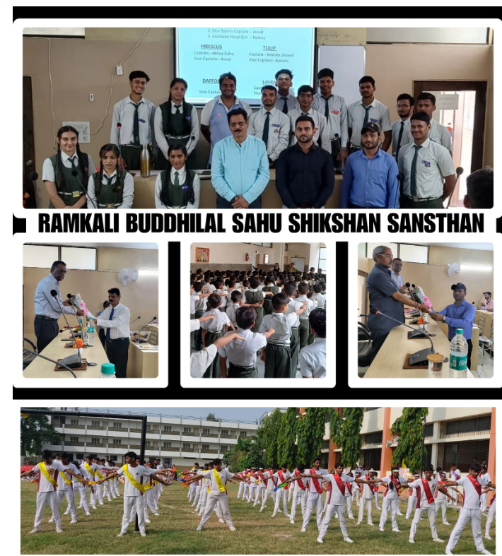

Ramkali Buddhilal Sahu Shikshan Sansthan (RBSSS) is a co-educational English medium school located in Purwa, Unnao and established in June, 2010 in the memory of Lt. Ramkali Buddhilala Sahu (Mother) By Mr. K.B. Sahu, affiliated to the CBSE, New Delhi. The School campus provides an aesthetic and sophisticated surrounding congenial for healthy teaching and learning. RBSSS is renowned for imparting holistic education and staying committed to the realization of the ‘Sustainable Development Goals’ as prescribed by the United Nations. The school facilitates diverse activities all year round so that not only the objective of all-inclusive education is fulfilled but strength of character is also enhanced to build individual and collective capacities. Fascinating environment, smartly attired students and committed and dedicated teachers and staff and above all a dynamic and compassionate Principal are the indispensable components of the Institution.
Our Goal to create a society in which all may have life-life in its fullness, liberated from the shackles and bondage of ignorance and oppression where people would accept each other as sisters and brothers under the common parenthood of God. To achieve excellence in delivering quality education of global standards, coupled with innovative practices using advanced technology and expertise, transforming the student community into potential global leaders with accountability to meet the social, national and dynamic global challenges.
